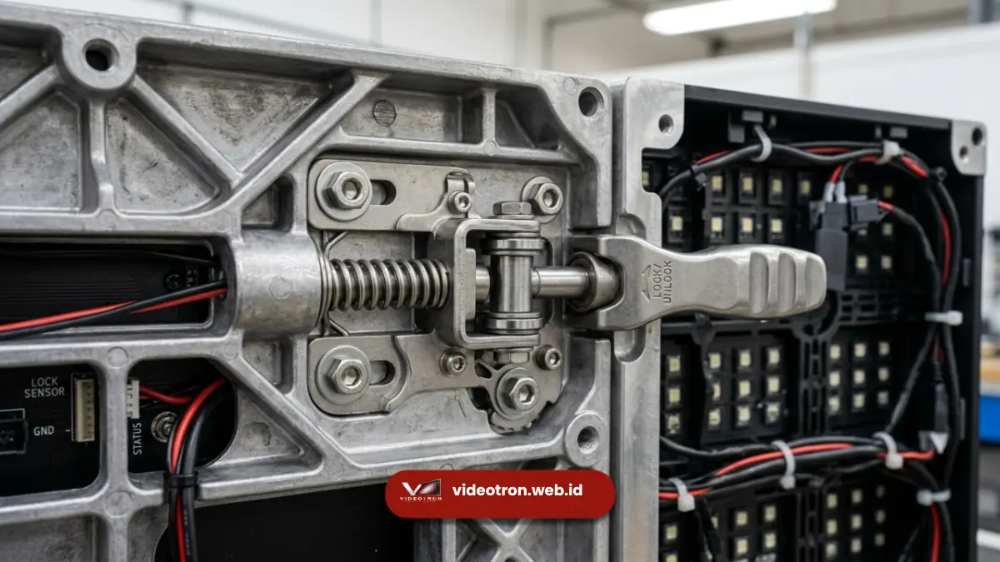

Metode maintenance depan adalah sistem perawatan videotron di mana modul panel dapat dilepas dan diperbaiki dari sisi depan layar tanpa perlu mengakses bagian belakang struktur.
Metode ini menjadi solusi tepat untuk videotron yang dipasang menempel langsung pada dinding tanpa ruang servis di belakangnya.
Poin Penting:
- Maintenance depan memungkinkan panel dilepas dari sisi depan menggunakan alat magnetik atau vacuum cup.
- Metode ini ideal untuk videotron yang dipasang rapat pada dinding tanpa celah belakang.
- Proses perbaikan dapat dilakukan tanpa membongkar struktur rangka secara keseluruhan.
- Kabinet magnesium alloy sering digunakan pada sistem front service karena bobotnya ringan saat dilepas manual.
- Metode ini membutuhkan alat bantu khusus dan teknisi yang terlatih menangani panel dari sisi depan.
Apa Itu Maintenance Akses Depan pada Videotron?
Maintenance akses depan, atau dikenal juga dengan istilah front service, adalah metode perawatan videotron yang memungkinkan teknisi melepas dan memasang kembali modul panel LED dari sisi depan layar.
Setiap modul biasanya dilengkapi mekanisme pengunci magnetik atau sistem quick-release yang memudahkan pelepasan tanpa alat berat.
Metode ini berbeda dengan sistem maintenance belakang yang mengharuskan teknisi mengakses bagian belakang rangka melalui ruang servis khusus.
Pada sistem front service, seluruh proses inspeksi, penggantian komponen, hingga pembersihan panel dapat dilakukan langsung dari permukaan depan videotron.
Secara umum, sistem ini banyak diterapkan pada videotron yang dipasang menempel pada dinding gedung, kolom struktur, atau area dengan keterbatasan ruang di bagian belakang layar.
Kapan Videotron Akses Depan Menjadi Pilihan Tepat?
Videotron akses depan menjadi pilihan tepat ketika lokasi instalasi tidak memiliki ruang kosong di belakang layar untuk akses teknisi, misalnya pada dinding permanen atau struktur kolom bangunan.
Beberapa kondisi umum yang membuat metode maintenance depan lebih relevan dibanding metode lain:
Instalasi pada Dinding Tanpa Ruang Belakang
Ketika videotron dipasang menempel langsung pada dinding beton atau bata tanpa celah struktural di belakangnya, akses maintenance belakang menjadi tidak memungkinkan.
Dalam kondisi ini, sistem front service menjadi satu-satunya opsi praktis untuk perawatan rutin maupun perbaikan darurat.
Fasad Gedung dengan Struktur Permanen
Videotron yang dipasang sebagai bagian dari fasad gedung sering kali menyatu dengan struktur bangunan secara permanen.
Ruang servis belakang biasanya tidak tersedia karena keterbatasan desain arsitektur, sehingga metode depan menjadi pendekatan yang lebih realistis.
Area dengan Keterbatasan Akses Fisik
Pada lokasi seperti area sempit antar bangunan atau videotron yang dipasang tinggi pada kolom tanpa ruang belakang, teknisi memerlukan metode yang tidak bergantung pada akses dari sisi belakang struktur.
Apa Kelebihan Metode Maintenance Depan?
Kelebihan utama metode maintenance depan adalah fleksibilitas instalasi pada lokasi dengan ruang terbatas serta proses perbaikan yang lebih cepat untuk kerusakan pada modul tertentu.
Beberapa kelebihan lain dari metode ini meliputi:
- Fleksibilitas lokasi instalasi: videotron dapat dipasang pada dinding permanen tanpa memerlukan ruang tambahan di belakang struktur.
- Efisiensi ruang bangunan: tidak ada kebutuhan alokasi ruang khusus untuk jalur servis belakang, sehingga menghemat area bangunan.
- Kecepatan perbaikan modul spesifik: teknisi dapat langsung mengakses dan mengganti modul bermasalah tanpa membongkar panel lain.
- Kesesuaian dengan kabinet magnesium alloy: bobot kabinet yang ringan mempermudah proses pelepasan dan pemasangan manual dari sisi depan.
Videotron dengan sistem front service cukup banyak diaplikasikan pada proyek fasad gedung komersial sejak metode ini semakin banyak diadopsi produsen videotron sebagai standar untuk instalasi dinding permanen.

Panel videotron dilepas dari sisi depan untuk mempermudah perawatan.Apa Keterbatasan Metode Maintenance Depan?
Keterbatasan metode maintenance depan adalah proses perbaikan yang memerlukan alat bantu khusus serta risiko gangguan tampilan visual sementara saat modul dilepas dari sisi depan.
Karena proses pelepasan panel dilakukan langsung dari permukaan layar, teknisi memerlukan alat bantu seperti vacuum cup atau alat magnetik khusus untuk menghindari kerusakan pada permukaan modul.
Selain itu, saat modul dilepas untuk perbaikan, area tersebut akan tampak kosong pada layar hingga proses perbaikan selesai, yang dapat memengaruhi tampilan visual videotron untuk sementara waktu, terutama jika perbaikan dilakukan saat videotron sedang aktif digunakan.
Bagaimana Proses Perawatan Rutin dengan Metode Depan Dilakukan?
Proses perawatan rutin dengan metode depan umumnya melibatkan pelepasan panel menggunakan alat bantu khusus, pemeriksaan komponen, pembersihan permukaan, dan pemasangan kembali modul ke posisi semula.
Tahapan umum perawatan meliputi identifikasi modul yang memerlukan perbaikan, pelepasan panel menggunakan vacuum cup atau alat sejenis, pemeriksaan kabel dan koneksi di balik modul, penggantian komponen jika diperlukan, hingga pemasangan kembali panel dengan memastikan kerataan permukaan tetap terjaga.
Ketelitian pada tahap pemasangan kembali penting agar tidak timbul celah antar-modul yang dapat memengaruhi kualitas visual layar.
Metode maintenance depan menjadi solusi yang relevan untuk videotron yang dipasang pada lokasi dengan ruang belakang terbatas, seperti dinding permanen atau fasad gedung.
Kombinasi metode ini dengan kabinet magnesium alloy yang ringan mempermudah proses perawatan rutin tanpa mengorbankan kekuatan struktural videotron.
Butuh rekomendasi metode maintenance yang sesuai dengan kondisi lokasi instalasi Anda? Hubungi tim kami untuk konsultasi teknis dan penawaran videotron yang sesuai kebutuhan proyek Anda.

Hawa Nadira
LED Technology Consultant dan Visual Educator
Konsultan dan spesialis solusi display digital berdedikasi tinggi yang fokus membagikan panduan edukatif mengenai penerapan teknologi layar LED videotron untuk kebutuhan interior modern di Indonesia.